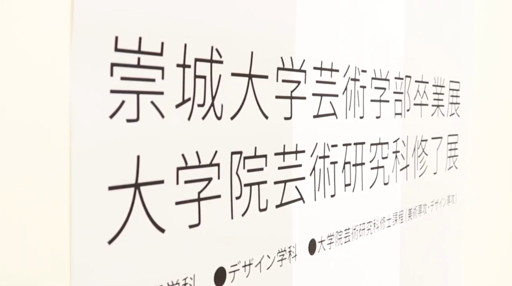

VIDEO

崇城大学芸術学部卒業展・大学院芸術研究科修了展2020
撮影・編集
2020年2月25日～3月1日に熊本県立美術館分館で開催された、崇城大学芸術学部卒業展・大学院芸術研究科修了展2020の映像です。
2020年3月 3分48秒
同じ構図が続いて飽きないように編集を心がけました。また、撮影では、写真みたいにならないようカメラワークを多くすることを心がけ撮影しました。
崇城大学情報学部 メディアコンテンツ制作演習作品①
撮影・編集・監督
2018年度、情報学科内で行われたメディアコンテンツ制作という講義で大学のPR動画というテーマで作った映像です。
2018年2月 30秒
崇城大学は丘の上にあり、坂道が特徴的です。その坂の険しさを伝えるために坂全体を撮影しました。編集では、坂を登った先にある楽しいキャンパスライフを表現するために回想風の編集を行いました。

崇城大学情報学部 メディアコンテンツ制作演習作品②
映像撮影
上記と同様、情報学科内で行われたメディアコンテンツ制作という講義で作った映像です。
2018年2月 30秒
30秒という限られた時間で大学の施設の雰囲気を伝えるために全体的に引いた撮影を心がけました。
※その他、熊本市、八代市、福岡市を中心に、婚礼のライブエンドロールや記録映像の撮影を年間100件近く行っております。